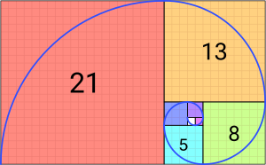

Projects
1. Wind Chill Index Calculator
Course: Intro to Programming
Programming Language: Python
Description: This project involved creating a simple Python program which takes 2 inputs from the user (air temperature and wind speed), and displays the wind chill index rounded to the closest integer. Here is the code for this project:
#INPUT
t = int(input("Enter the air temperature in degrees Celsius:\n"))
v = int(input("Enter the wind speed in Km per hour:\n"))
#PROCESSING
wci = 13.12 + (0.6215 * t) - (11.37 * (v ** 0.16)) + (0.3965 * t * (v ** 0.16))
#OUTPUT
print("The windchill for temperature:", t, "degrees Celsius, and wind speed:", v, "Km per hour, is:", (format(wci, '.2f')), "degrees Celsius.")
2. Triangle Calculator
Course: Intro to Programming
Programming Language: Python
Description: This project involved creating a simple Python program which takes 3 inputs from the user (3 side lengths of their triangle), and displays what type of triangle it is (equilateral, isosceles, or scalene). Here is the code for this project:
#INPUT
side1 = int(input("Enter the length of side 1: "))
side2 = int(input("Enter the length of side 2: "))
side3 = int(input("Enter the length of side 3: "))
#PROCESSING
# check for errors in input
if side1 < 0 or side1 > 100 or side2 < 0 or side2 > 100 or side3 < 0 or side3 > 100:
print("Invalid side length(s). Side length must be between 0 and 100.")
# if no errors
else:
# check the type of triangle based on the length of sides
#OUTPUT
if side1 == side2 == side3:
print("Equilateral triangle")
elif side1 == side2 or side1 == side3 or side2 == side3:
print("Isosceles triangle")
else:
print("Scalene triangle")
3. Stack Data Structure
Course: Data Structures and Algorithms
Programming Language: Java
Description: This project involved creating a Stack data structure with the following operations: push, pop, top, size, isEmpty, and isFull. This a linear data structure that follows a principle known as LIFO (Last In First Out). Here is the code for this project:
class Stack {
private int[] array;
private int top;
private int capacity;
Stack(int size) {
array = new int[size];
top = -1;
capacity = size;
}
public void push(int item) {
if (isFull()) {
System.out.println("Stack is full");
return;
}
array[++top] = item;
}
public int pop() {
if (isEmpty()) {
System.out.println("Stack is empty");
}
return array[top--];
}
public int top() {
if (isEmpty()) {
System.out.println("Stack is empty");
}
return array[top];
}
public int size() {
return top + 1;
}
public boolean isEmpty() {
return top == -1;
}
public boolean isFull() {
return top == capacity - 1;
}
}
4. Quick Sort Algorithm

Course: Data Structures and Algorithms
Programming Language: Java
Description: This project involved creating a sorting algorithm called Quicksort. My algorithm creates a partition around the last element of the array, and continues this process until there is only 1 element left in the array. Then, all of the sub-arrays are recursively sorted. The average running time for this algorithm is O(n log n). Here is the code for this project:
public class quickSort{
public static void quickS(int[] arr, int start, int end) {
if (start < end) {
int pivot = arr[end];
int partitionIndex = start;
for (int i = start; i < end; i++) {
if (arr[i] <= pivot) {
int temp = arr[i];
arr[i] = arr[partitionIndex];
arr[partitionIndex] = temp;
partitionIndex++;
}
}
int temp = arr[end];
arr[end] = arr[partitionIndex];
arr[partitionIndex] = temp;
quickS(arr, start, partitionIndex - 1);
quickS(arr, partitionIndex + 1, end);
}
}
5. Fibonacci Number Sequence Assembly Program
Course: Microprocessor Programming
Programming Language: Assembly Language
Description: This project involved creating a program in Assembly Language that calculates the first seven values of the Fibonacci number sequence. My program uses a loop, and the loop continues until the counter value in the ECX register reaches 0. Then, the DumpRegs function is called to display the contents of the registers. Here is the code for this project:
TITLE
; Alexandar Stefanovski :
; 2023-02-01 :
; 110077148 :
; This program uses a loop to calculate the first seven values of the Fibonacci number sequence :
INCLUDE Irvine32.inc
INCLUDELIB Irvine32.lib
.data
; data declarations go here
.code
main PROC
; program syntax here
mov eax , 1 ; load the first number of the sequence into the eax register
call DumpRegs ; call the DumpRegs function to display the current contents of the registers
mov ebx, 0 ; initialize the ebx register to 0
mov edx, 1 ; load the second number of the sequence into the edx register
mov ecx, 6 ; set the counter in the ecx register to 6
L1:
mov eax, ebx ; copy the contents of ebx into eax
add eax, edx ; ddd the contents of edx to eax and store the result in eax
call DumpRegs ; call the DumpRegs function to display the current contents of the registers
mov ebx, edx ; copy the contents of edx into ebx
mov edx, eax ; copy the contents of eax into edx
loop L1 ; repeat the loop until the counter in ecx reaches 0
exit
main ENDP
END main